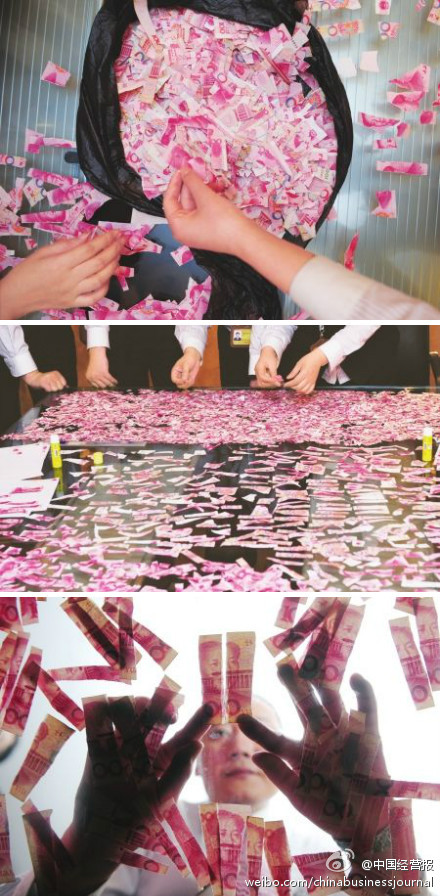

五万人民币现金？听着不对头啊。//@马少平THU: 一张撕碎的纸自动拼接是有人做的，效果似乎也很好。但是这么多张的，难度大了点//@林晓森-thu: 这个可以作为一个算法题来考考大家了 @紫荆花韩松 @马少平THU@中国经营报:【女子将5万元撕碎 12人6小时拼完1张百元钞票】近日，四川一名女子突然发病将5万元救命钱撕碎，其丈夫张某被迫向银行求救。5月3日，12名银行工作人员经过分拣、拼接6小时才从碎片中艰难拼出一张百元的钞票。工作人员称，钞票票面残缺一半就无法兑换，张某剩下的钱可能只有作废了。（华西都市报） 